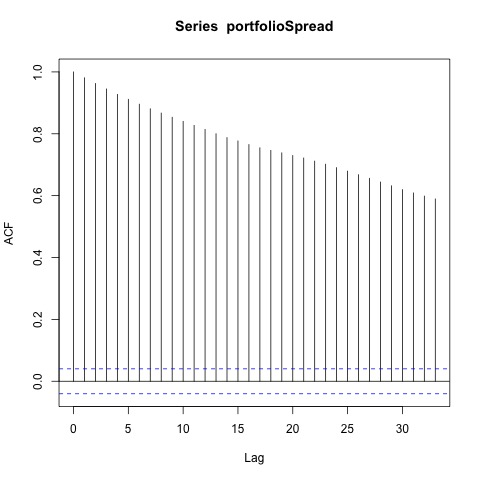
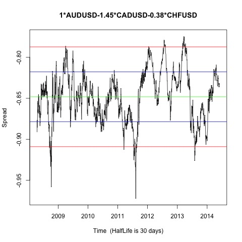
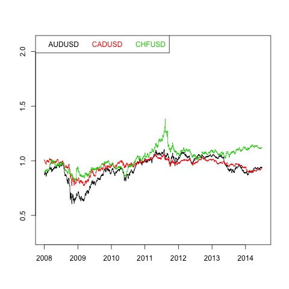
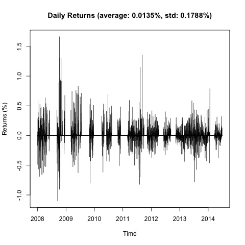
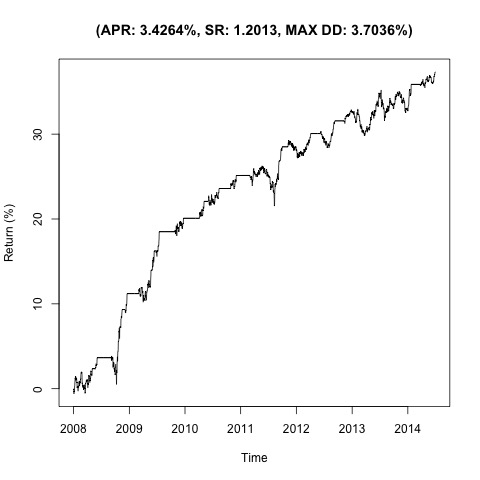

Johansen-Procedure "" "10pct" "5pct" "1pct" "r <= 2 |" 1.77 7.52 9.24 12.97 "r <= 1 |" 9.78 17.85 19.96 24.6 "r = 0 |" 38.36 32 34.91 41.07 "AUDUSD.l2" "CADUSD.l2" "CHFUSD.l2" "constant" "AUDUSD.l2" 1 1 1 1 "CADUSD.l2" -1.45 3.25 -0.37 -1.54 "CHFUSD.l2" -0.38 -2.78 0.96 0.71 "constant" 0.85 -1.17 -1.62 0.12
Augmented Dickey-Fuller Test p-value 0.01    